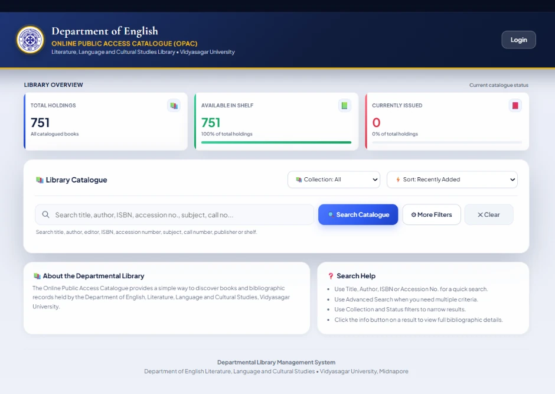

M.Lib.I.Sc. Library & Information Science
July 2026 – July 2027 (pursuing)
Vidyasagar University, Midnapore
Specialisation areas: AI/ML in Libraries, Health Information Systems
Library and Information Science postgraduate student (M.Lib.I.Sc., Vidyasagar University) with a B.Lib.I.Sc. from the University of North Bengal and an Honours degree in Political Science. Working knowledge of Koha, DSpace, Linux and digital libraries, with data skills in C, Python, SQL and Power BI.
Seeking an entry-level Librarian / Library & Information Assistant role where I can apply my academic learning and grow professionally.
Download CVJuly 2026 – July 2027 (pursuing)
Vidyasagar University, Midnapore
Specialisation areas: AI/ML in Libraries, Health Information Systems
November 2025 – July 2026
University of North Bengal, Siliguri
68.20% / CGPA 7.27
August 2022 – July 2025
Siliguri College (University of North Bengal)
General electives: Economics, Geography · CGPA 6.20
Completed July 2022
Sahebganj High School (H.S.), Cooch Behar
84.6% · Bengali, English, Political Science, Geography, Philosophy, Education
Academic
AI/ML in Libraries Health Information Systems Digital Libraries Information Organization
Beyond the classroom
Political analysis & current affairs Social volunteering Movies Anime Cricket
I am a postgraduate student of Library and Information Science at Vidyasagar University. I also hold a B.Lib.I.Sc. from the University of North Bengal and an Honours degree in Political Science.
I have working knowledge of Koha and DSpace, Linux and digital libraries, and I use Python, SQL and Power BI for data work. My M.Lib.I.Sc. specialisation areas are AI/ML in Libraries and Health Information Systems.
I am looking for an entry-level Librarian or Library & Information Assistant role where I can apply what I have learnt and keep growing. Please reach out.
Seeking an entry-level role
Librarian / Library & Information Assistant
No formal work experience yet. I am eager to begin my professional journey by applying my academic knowledge, project experience and technical skills in a real-world library environment.
2017 – 2020
'A' Certificate holder (school level)
A project from my LIS studies, built with free tools.

An online public access catalogue for the Department of English, Vidyasagar University. Records are organised for retrieval using knowledge-organization and information-retrieval principles from my LIS coursework.
Operating Systems
Microsoft Office Applications
Based in Siliguri/Dinhata, West Bengal. Open to entry-level Librarian and Library & Information Assistant roles.